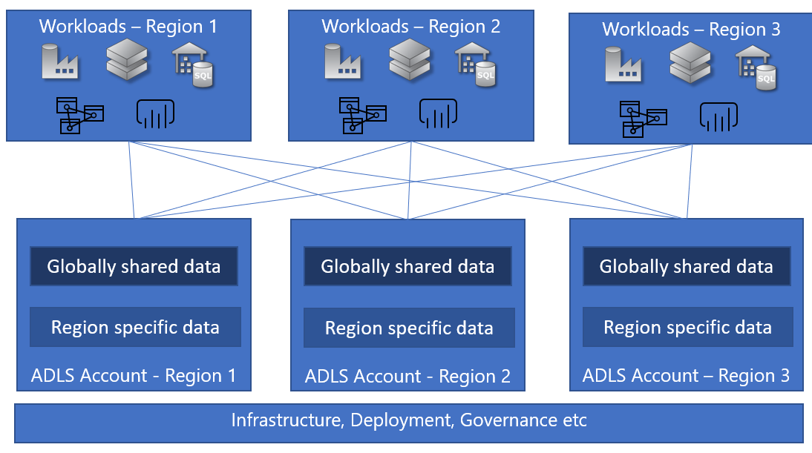
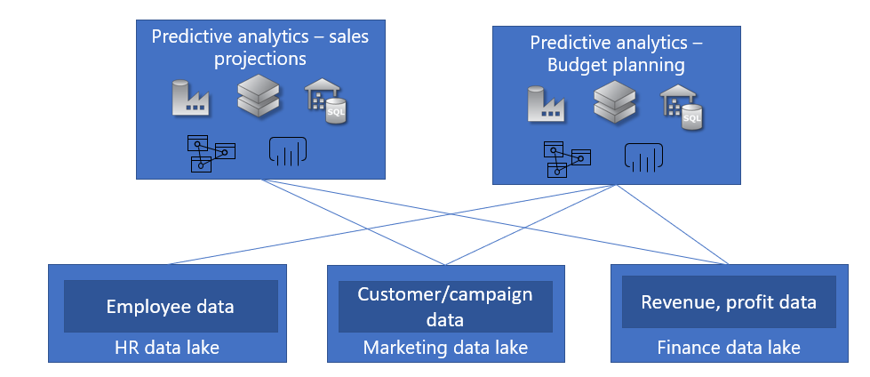
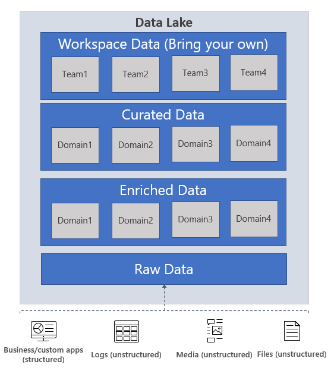
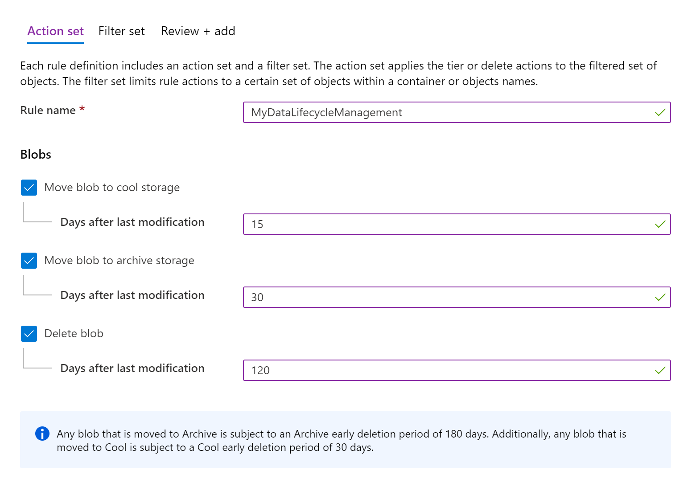
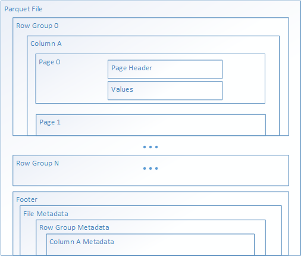
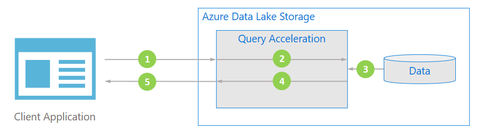

The Hitchhiker's Guide to the Data Lake #
A comprehensive guide on key considerations involved in building your enterprise data lake
- The Hitchhiker's Guide to the Data Lake
Azure Data Lake Storage Gen2 (ADLS Gen2) is a highly scalable and cost-effective data lake solution for big data analytics. As we continue to work with our customers to unlock key insights out of their data using ADLS Gen2, we have identified a few key patterns and considerations that help them effectively utilize ADLS Gen2 in large scale Big Data platform architectures.
This document captures these considerations and best practices that we have learnt based on working with our customers. For the purposes of this document, we will focus on the Modern Data Warehouse pattern used prolifically by our large-scale enterprise customers on Azure , including our solutions such as Azure Synapse Analytics.

We will improve this document to include more analytics patterns in future iterations.
Important: Please consider the content of this document as guidance and best practices to help you make your architectural and implementation decisions. This is not an official HOW-TO documentation.
When is ADLS Gen2 the right choice for your data lake? #
An enterprise data lake is designed to be a central repository of unstructured , semi-structured and structured data used in your big data platform. The goal of the enterprise data lake is to eliminate data silos (where the data can only be accessed by one part of your organization) and promote a single storage layer that can accommodate the various data needs of the organization For more information on picking the right storage for your solution, please visit the Choosing a big data storage technology in Azure article.
A common question that comes up is when to use a data warehouse vs a data lake. We urge you to think about data lake and data warehouse as complementary solutions that work together to help you derive key insights from your data. A data lake is a store for all types of data from various sources. The data in its natural form is stored as raw data, and schema and transformations are applied on this raw data to gain valuable business insights depending on the key questions the business is trying to answer. A data warehouse is a store for highly structured schematized data that is usually organized and processed to derive very specific insights. E.g. a retail customer can store the past 5 years’ worth of sales data in a data lake, and in addition they can process data from social media to extract the new trends in consumption and intelligence from retail analytics solutions on the competitive landscape and use all these as input together to generate a data set that can be used to project the next years sales targets. They can then store the highly structured data in a data warehouse where BI analysts can build the target sales projections. In addition, they can use the same sales data and social media trends in the data lake to build intelligent machine learning models for personalized recommendations on their website.
ADLS Gen2 is an enterprise ready hyperscale repository of data for your big data analytics workloads. ADLS Gen2 offers faster performance and Hadoop compatible access with the hierarchical namespace, lower cost and security with fine grained access controls and native AAD integration. This lends itself as the choice for your enterprise data lake focused on big data analytics scenarios – extracting high value structured data out of unstructured data using transformations, advanced analytics using machine learning or real time data ingestion and analytics for fast insights. Its worth noting that we have seen customers have different definition of what hyperscale means – this depends on the data stored, the number of transactions and the throughput of the transactions. When we say hyperscale, we are typically referring to multi-petabytes of data and hundreds of Gbps in throughput – the challenges involved with this kind of analytics is very different from a few hundred GB of data and a few Gbps of transactions in throughput.
Key considerations in designing your data lake #
As you are building your enterprise data lake on ADLS Gen2, its important to understand your requirements around your key use cases, including
- What am I storing in my data lake?
- How much data am I storing in the data lake?
- What portion of your data do you run your analytics workloads on?
- Who needs access to what parts of my data lake?
- What are the various analytics workloads that I’m going to run on my data lake?
- What are the various transaction patterns on the analytics workloads?
- What is the budget I’m working with?
We would like to anchor the rest of this document in the following structure for a few key design/architecture questions that we have heard consistently from our customers.
- Available options with the pros and cons
- Factors to consider when picking the option that works for you
- Recommended patterns where applicable
- Anti-patterns that you want to avoid
To best utilize this document, identify your key scenarios and requirements and weigh in our options against your requirements to decide on your approach. If you are not able to pick an option that perfectly fits your scenarios, we recommend that you do a proof of concept (PoC) with a few options to let the data guide your decision.
Terminology #
Before we talk about the best practices in building your data lake, it’s important to get familiar with the various terminology we will use this document in the context of building your data lake with ADLS Gen2. This document assumes that you have an account in Azure.
Resource: A manageable item that is available through Azure. Virtual machines, storage accounts, VNETs are examples of resources.
Subscription: An Azure subscription is a logical entity that is used to separate the administration and financial (billing) logic of your Azure resources. A subscription is associated with limits and quotas on Azure resources, you can read about them here.
Resource group: A logical container to hold the resources required for an Azure solution can be managed together as a group. You can read more about resource groups here.
Storage account: An Azure resource that contains all of your Azure Storage data objects: blobs, files, queues, tables and disks. You can read more about storage accounts here. For the purposes of this document, we will be focusing on the ADLS Gen2 storage account – which is essentially a Azure Blob Storage account with Hierarchical Namespace enabled, you can read more about it here.
container (also referred to as container for non-HNS enabled accounts): A container organizes a set of objects (or files). A storage account has no limits on the number of containers, and the container can store an unlimited number of folders and files. There are properties that can be applied at a container level such as RBACs and SAS keys.
Folder/Directory: A folder (also referred to as a directory) organizes a set of objects (other folders or files). There are no limits on how many folders or files can be created under a folder. A folder also has access control lists (ACLs) associated with it, there are two types of ACLs associated with a folder – access ACLs and default ACLs, you can read more about them here.
Object/file: A file is an entity that holds data that can be read/written. A file has an access control list associated with it. A file has only access ACLs and no default ACLs.
Organizing and managing data in your data lake #
As our enterprise customers build out their data lake strategy, one of the key value proposition of ADLS Gen2 is to serve as the single data store for all their analytics scenarios. Please remember that this single data store is a logical entity that could manifest either as a single ADLS Gen2 account or as multiple accounts depending on the design considerations. Some customers have end to end ownership of the components of an analytics pipeline, and other customers have a central team/ organization managing the infrastructure, operations and governance of the data lake while serving multiple customers – either other organizations in their enterprise or other customers external to their enterprise.
In this section, we have addressed our thoughts and recommendations on the common set of questions that we hear from our customers as they design their enterprise data lake. For illustration, we will take the example of a large retail customer, Contoso.com, building out their data lake strategy to help with various predictive analytics scenarios.
Do I want a centralized or a federated data lake implementation? #
As an enterprise data lake, you have two available options – either centralize all the data management for your analytics needs within one organization, or have a federated model, where your customers manage their own data lakes while the centralized data team provides guidance and also manages a few key aspects of the data lake such as security and data governance. It is important to remember that both the centralized and federated data lake strategies can be implemented with one single storage account or multiple storage accounts.
A common question our customers ask us is if they can build their data lake in a single storage account or if they need multiple storage accounts. While technically a single ADLS Gen2 could solve your business needs, there are various reasons why a customer would choose multiple storage accounts, including, but not limited to the following scenarios in the rest of this section.
Key considerations #
When deciding the number of storage accounts you want to create, the following considerations are helpful in deciding the number of storage accounts you want to provision.
- A single storage account gives you the ability to manage a single set of control plane management operations such as RBACs, firewall settings, data lifecycle management policies for all the data in your storage account, while allowing you to organize your data using containers, files and folders on the storage account. If you want to optimize for ease of management, specially if you adopt a centralized data lake strategy, this would be a good model to consider.
- Multiple storage accounts provide you the ability to isolate data across different accounts so different management policies can be applied to them or manage their billing/cost logic separately. If you are considering a federated data lake strategy with each organization or business unit having their own set of manageability requirements, then this model might work best for you.
Let us put these aspects in context with a few scenarios.
Enterprise data lake with a global footprint #
Driven by global markets and/or geographically distributed organizations, there are scenarios where enterprises have their analytics scenarios factoring multiple geographic regions. The data itself can be categorized into two broad categories.
- Data that can be shared globally across all regions – E.g. Contoso is trying to project their sales targets for the next fiscal year and want to get the sales data from their various regions.
- Data that needs to be isolated to a region – E.g. Contoso wants to provide a personalized buyer experience based on their profile and buying patterns. Given this is customer data, there are sovereignty requirements that need to be met, so the data cannot leave the region.
In this scenario, the customer would provision region-specific storage accounts to store data for a particular region and allow sharing of specific data with other regions. There is still one centralized logical data lake with a central set of infrastructure management, data governance and other operations that comprises of multiple storage accounts here.

Customer or data specific isolation #
There are scenarios where enterprise data lakes serve multiple customer (internal/external) scenarios that may be subject to different requirements – different query patterns and different access requirements. Let us take our Contoso.com example where they have analytics scenarios to manage the company operations. In this case, they have various data sources – employee data, customers/campaign data and financial data that are subject to different governance and access rules and are also possibly managed by different organizations within the company. In this case, they could choose to create different data lakes for the various data sources.
In another scenario, enterprises that serve as a multi-tenant analytics platform serving multiple customers could end up provisioning individual data lakes for their customers in different subscriptions to help ensure that the customer data and their associated analytics workloads are isolated from other customers to help manage their cost and billing models.

Recommendations #
- Create different storage accounts (ideally in different subscriptions) for your development and production environments. In addition to ensuring that there is enough isolation between your development and production environments requiring different SLAs, this also helps you track and optimize your management and billing policies efficiently.
- Identify the different logical sets of your data and think about your needs to manage them in a unified or isolated fashion – this will help determine your account boundaries.
- Start your design approach with one storage account and think about reasons why you need multiple storage accounts (isolation, region based requirements etc) instead of the other way around.
- There are also subscription limits and quotas on other resources (such as VM cores, ADF instances) – factor that into consideration when designing your data lake.
Anti-patterns #
Beware of multiple data lake management #
When you decide on the number of ADLS Gen2 storage accounts, ensure that you are optimizing for your consumption patterns. If you do not require isolation and you are not utilizing your storage accounts to their fullest capabilities, you will be incurring the overhead of managing multiple accounts without a meaningful return on investment.
Copying data back and forth #
When you have multiple data lakes, one thing you would want to treat carefully is if and how you are replicating data across the multiple accounts. This creates a management problem of what is the source of truth and how fresh it needs to be, and also consumes transactions involved in copying data back and forth. We have features in our roadmap that makes this workflow easier if you have a legitimate scenario to replicate your data.
A note on scale #
One common question that our customers ask is if a single storage account can infinitely continue to scale to their data, transaction and throughput needs. Our goal in ADLS Gen2 is to meet the customer where they want in terms of their limits. We do request that when you have a scenario where you have requirements for really storing really large amounts of data (multi-petabytes) and require the account to support a really large transaction and throughput pattern (tens of thousands of TPS and hundreds of Gbps throughput), typically observed by requiring 1000s of cores of compute power for analytics processing via Databricks or HDInsight, please do contact our product group so we can plan to support your requirements appropriately.
How do I organize my data? #
Data organization in a an ADLS Gen2 account can be done in the hierarchy of containers, folders and files in that order, as we saw above. A very common point of discussion as we work with our customers to build their data lake strategy is how they can best organize their data. There are multiple approaches to organizing the data in a data lake, this section documents a common approach that has been adopted by many customers building a data platform.
This organization follows the lifecycle of the data as it flows through the source systems all the way to the end consumers – the BI analysts or Data Scientists. As an example, let us follow the journey of sales data as it travels through the data analytics platform of Contoso.com.

As an example , think of the raw data as a lake/pond with water in its natural state, the data is ingested and stored as is without transformations, the enriched data is water in a reservoir that is cleaned and stored in a predictable state (schematized in the case of our data), the curated data is like bottled water that is ready for consumption. Workspace data is like a laboratory where scientists can bring their own for testing. Its worth noting that while all this data layers are present in a single logical data lake, they could be spread across different physical storage accounts. In these cases, having a metastore is helpful for discovery.
-
Raw data: This is data as it comes from the source systems. This data is stored as is in the data lake and is consumed by an analytics engine such as Spark to perform cleansing and enrichment operations to generate the curated data. The data in the raw zone is sometimes also stored as an aggregated data set, e.g. in the case of streaming scenarios, data is ingested via message bus such as Event Hub, and then aggregated via a real time processing engine such as Azure Stream analytics or Spark Streaming before storing in the data lake. Depending on what your business needs, you can choose to leave the data as is (E.g. log messages from servers) or aggregate it (E.g. real time streaming data). This layer of data is highly controlled by the central data engineering team and is rarely given access to other consumers. Depending on the retention policies of your enterprise, this data is either stored as is for the period required by the retention policy or it can be deleted when you think the data is of no more use. E.g. this would be raw sales data that is ingested from Contoso’s sales management tool that is running in their on-prem systems.
-
Enriched data: This layer of data is the version where raw data (as is or aggregated) has a defined schema and also, the data is cleansed, enriched (with other sources) and is available to analytics engines to extract high value data. Data engineers generate these datasets and also proceed to extract high value/curated data from these datasets. E.g. this would be enriched sales data – ensuring that the sales data is schematized, enriched with other product or inventory information and also separated into multiple datasets for the different business units inside Contoso.
-
Curated data: This layer of data contains the high value information that is served to the consumers of the data – the BI analysts and the data scientists. This data has structure and can be served to the consumers either as is (E.g. data science notebooks) or through a data warehouse. Data assets in this layer is usually highly governed and well documented. E.g. high-quality sales data (that is data in the enriched data zone correlated with other demand forecasting signals such as social media trending patterns) for a business unit that is used for predictive analytics on determining the sales projections for the next fiscal year.
-
Workspace data: In addition to the data that is ingested by the data engineering team from the source, the consumers of the data can also choose to bring other data sets that could be valuable. In this case, the data platform can allocate a workspace for these consumers so they can use the curated data along with the other data sets they bring to generate valuable insights. E.g. a Data Science team is trying to determine the product placement strategy for a new region, they could bring other data sets such as customer demographics and data on usage of other similar products from that region and use the high value sales insights data to analyze the product market fit and the offering strategy.
-
Archive data: This is your organization’s data ‘vault’ - that has data stored to primarily comply with retention policies and has very restrictive usage, such as supporting audits. You can use the Cool and Archive tiers in ADLS Gen2 to store this data. You can read more about our data lifecycle management policies to identify a plan that works for you.
Key considerations #
When deciding the structure of your data, consider both the semantics of the data itself as well as the consumers who access the data to identify the right data organization strategy for you.
Recommendations #
- Create different folders or containers (more below on considerations between folders vs containers) for the different data zones - raw, enriched, curated and workspace data sets.
- Inside a zone, choose to organize data in folders according to logical separation, e.g. datetime or business units or both. You can find more examples and scenarios on directory layout in our best practices document.
- Consider the analytics consumption patterns when designing your folder structures. E.g. if you have a Spark job reading all sales data of a product from a specific region for the past 3 months, then an ideal folder structure here would be /enriched/product/region/timestamp.
- Consider the access control model you would want to follow when deciding your folder structures.
- The table below provides a framework for you to think about the different zones of the data and the associated management of the zones with a commonly observed pattern.
| Consideration | Raw data | Enriched data | Curated data | Workspace data |
|---|---|---|---|---|
| Consumer | Data engineering team | Data engineering team, with adhoc access patterns by the Data scientists/BI analysts | Data engineers, BI analysts, Data scientists | Data scientists/BI analysts |
| Access control | Locked for access by data engineering team | Full control to data engineering team, with read access to the BI analysts/data scientists | Full control to data engineering team, with read and write access to the BI analysts/data scientists | Full control to data engineers, data scientists/Bi analysts |
| Data lifecycle management | Once enriched data is generated, can be moved to a cooler tier of storage to manage costs. | Older data can be moved to a cooler tier. | Older data can be moved to a cooler tier. | While the end consumers have control of this workspace, ensure that there are processes and policies to clean up data that is not necessary – using policy based DLM for e.g., the data could build up very easily. |
| Folder structure and hierarchy | Folder structure to mirror the ingestion patterns. | Folder structure mirrors organization, e.g. business units. | Folder structure mirrors organization, e.g. business units. | Folder structures mirror teams that the workspace is used by. |
| Example | /raw/sensordata /raw/lobappdata /raw/userclickdata | /enriched/sales /enriched/manufacturing | /curated/sales /curated/manufacturing | /workspace/salesBI /workspace/manufacturindatascience |
- Another common questions that our customers ask if when to use containers and when to use folders to organize the data. While at a higher level, they both are used for logical organizations of the data, they have a few key differences.
| Consideration | container | Folder |
|---|---|---|
| Hierarchy | container can contain folders or files. | Folder can contain other folders or files. |
| Access control using AAD | At the container level, you can set coarse grained access controls using RBACs. These RBACs apply to all data inside the container. | At the folder level, you can set fine grained access controls using ACLs. The ACLs apply to the folder only (unless you use default ACLs, in which case, they are snapshotted when new files/folders are created under the folder). |
| Non-AAD access control | At a container level, you can enable anonymous access (via shared keys) or set SAS keys specific to the container. | A folder does not support non-AAD access control. |
Anti-patterns #
Indefinite growth of irrelevant data #
While ADLS Gen2 storage is not very expensive and lets you store a large amount of data in your storage accounts, lack of lifecycle management policies could end up growing the data in the storage very quickly even if you don’t require the entire corpus of data for your scenarios. Two common patterns where we see this kind of data growth is :-
- Data refresh with a newer version of data – Customers typically keep a few older versions of the data for analysis when there is a period refresh of the same data, e.g. when customer engagement data over the last month is refreshed daily over a rolling window of 30 days, you get 30 days engagement data everyday and when you don’t have a clean up process in place, your data could grow exponentially.
- Workspace data accumulation – In the workspace data zone, the customers of your data platform, i.e. the BI analysts or data scientists can bring their own data sets Typically, we have seen that this data could also accumulate just as easily when the data not used is left lying around in the storage spaces.
How do I manage access to my data? #
ADLS Gen2 supports access control models that combine both RBACs and ACLs to manage access to the data. You can find more information about the access control here. In addition to managing access using AAD identities using RBACs and ACLs, ADLS Gen2 also supports using SAS tokens and shared keys for managing access to data in your Gen2 account.
A common question that we hear from our customers is when to use RBACs and when to use ACLs to manage access to the data. RBACs let you assign roles to security principals (user, group, service principal or managed identity in AAD) and these roles are associated with sets of permissions to the data in your container. RBACs can help manage roles related to control plane operations (such as adding other users and assigning roles, manage encryption settings, firewall rules etc) or for data plane operations (such as creating containers, reading and writing data etc). Fore more information on RBACs, you can read this article.
RBACs are essentially scoped to top-level resources – either storage accounts or containers in ADLS Gen2. You can also apply RBACs across resources at a resource group or subscription level. ACLs let you manage a specific set of permissions for a security principal to a much narrower scope – a file or a directory in ADLS Gen2. There are 2 types of ACLs – Access ADLs that control access to a file or a directory, Default ACLs are templates of ACLs set for directories that are associated with a directory, a snapshot of these ACLs are inherited by any child items that are created under that directory.
Key considerations #
The table below provides a quick overview of how ACLs and RBACs can be used to manage permissions to the data in your ADLS Gen2 accounts – at a high level, use RBACs to manage coarse grained permissions (that apply to storage accounts or containers) and use ACLs to manage fine grained permissions (that apply to files and directories).
| Consideration | RBACs | ACLs |
|---|---|---|
| Scope | Storage accounts, containers. Cross resource RBACs at subscription or resource group level. | Files, directories |
| Limits | 2000 RBACs in a subscription | 32 ACLs (effectively 28 ACLs) per file, 32 ACLs (effectively 28 ACLs) per folder, default and access ACLs each |
| Supported levels of permission | Built-in RBACs or custom RBACs | ACL permissions |
When using RBAC at the container level as the only mechanism for data access control, be cautious of the 2000 limit, particularly if you are likely to have a large number of containers. You can view the number of role assigments per subscription in any of the access control (IAM) blades in the portal.
Recommendations #
- Create security groups for the level of permissions you want for an object (typically a directory from what we have seen with our customers) and add them to the ACLs. For specific security principals you want to provide permissions, add them to the security group instead of creating specific ACLs for them. Following this practice will help you minimize the process of managing access for new identities – which would take a really long time if you want to add the new identity to every single file and folder in your container recursively. Let us take an example where you have a directory, /logs, in your data lake with log data from your server. You ingest data into this folder via ADF and also let specific users from the service engineering team upload logs and manage other users to this folder. In addition, you also have various Databricks clusters analyzing the logs. You will create the /logs directory and create two AAD groups LogsWriter and LogsReader with the following permissions.
- LogsWriter added to the ACLs of the /logs folder with rwx permissions.
- LogsReader added to the ACLs of the /logs folder with r-x permissions.
- The SPNs/MSIs for ADF as well as the users and the service engineering team can be added to the LogsWriter group.
- The SPNs/MSIs for Databricks will be added to the LogsReader group.
What data format do I choose? #
Data may arrive to your data lake account in a variety of formats – human readable formats such as JSON, CSV or XML files, compressed binary formats such as .tar.gz and a variety of sizes – huge files (a few TBs) such as an export of a SQL table from your on-premise systems or a large number of tiny files (a few KBs) such as real-time events from your IoT solution. While ADLS Gen2 supports storing all kinds of data without imposing any restrictions, it is better to think about data formats to maximize efficiency of your processing pipelines and optimize costs – you can achieve both of these by picking the right format and the right file sizes. Hadoop has a set of file formats it supports for optimized storage and processing of structured data. Let us look at some common file formats – Avro, Parquet and ORC. All of these are machine-readable binary file formats, offer compression to manage the file size and are self-describing in nature with a schema embedded in the file. The difference between the formats is in how data is stored – Avro stores data in a row-based format and Parquet and ORC formats store data in a columnar format.
Key considerations #
- Avro file format is favored where the I/O patterns are more write heavy or the query patterns favor retrieving multiple rows of records in their entirety. E.g. Avro format is favored by message bus such as Event Hub or Kafka writes multiple events/messages in succession.
- Parquet and ORC file formats are favored when the I/O patterns are more read heavy and/or when the query patterns are focused on a subset of columns in the records – where the read transactions can be optimized to retrieve specific columns instead of reading the entire record.
How do I manage my data lake cost? #
ADLS Gen2 offers a data lake store for your analytics scenarios with the goal of lowering your total cost of ownership. The pricing for ADLS Gen2 can be found here. As our enterprise customers serve the needs of multiple organizations including analytics use-cases on a central data lake, their data and transactions tend to increase dramatically. With little or no centralized control, so will the associated costs increase. This section provides key considerations that you can use to manage and optimize the cost of your data lake.
Key considerations #
- ADLS Gen2 provides policy management that you can use to leverage the lifecycle of data stored in your Gen2 account. You can read more about these policies here. E.g. if your organization has a retention policy requirement to keep the data for 5 years, you can set a policy to automatically delete the data if it has not been modified for 5 years. If your analytics scenarios primarily operate on data that is ingested in the past month, you can move the data older than the month to a lower tier (cool or archive) which have a lower cost for data stored. Please note that the lower tiers have a lower price for data at rest, but higher policies for transactions, so do not move data to lower tiers if you expect the data to be frequently transacted on.

- Ensure that you are choosing the right replication option for your accounts, you can read the data redundancy article to learn more about your options. E.g. while GRS accounts ensure that your data is replicated across multiple regions, it also costs higher than an LRS account (where data is replicated on the same datacenter). When you have a production environment, replication options such as GRS are highly valuable to ensure business continuity with high availability and disaster recovery. However, an LRS account might just suffice for your development environment.
- As you can see from the pricing page of ADLS Gen2, your read and write transactions are billed in 4 MB increments. E.g. if you do 10,000 read operations and each file read is 16 MB in size, you will be charged for 40,000 transactions. When you have scenarios where you read a few KBs of data in a transaction, you will still be charged for the a 4 MB transaction. Optimizing for more data in a single transaction, i.e. optimizing for higher throughtput in your transactions does not just save cost, but also highly improves your performance.
How do I monitor my data lake? #
Understanding how your data lake is used and how it performs is a key component of operationalizing your service and ensuring it is available for use by any workloads which consume the data contained within it. This includes:
- Being able to audit your data lake in terms of frequent operations
- Having visibiliy into key performace indicators such as operations with high latency
- Undestanding common errors, the operations that caused the error, and operations which cause service-side throttling
Key considerations #
All of the telemetry for your data lake is available through Azure Storage logs in Azure Monitor. Azure Storage logs in Azure Monitor is a new preview feature for Azure Storage which allows for a direct integration between your storage accounts and Log Analytics, Event Hubs, and archival of logs to another storage account utilizing standard diagnostic settings. A reference of the the full list of metrics and resources logs and their associated schema can be found in the Azure Storage monitoring data reference.
- Where your choose to store your logs from Azure Storage logs becomes important when you consider how you will access it:
- If you want to access your logs in near real-time and be able to correlate events in logs with other metrics from Azure Monitor, you can store your logs in a Log Analytics workspace. This allows you to query your logs using KQL and author queries which enumerate the
StorageBlobLogstable in your workspace. - If you want to store your logs for both near real-time query and long term retention, you can configure your diagnostic settings to send logs to both a Log Analytics workspace and a storage account.
- If you want to access your logs through another query engine such as Splunk, you can configure your dianostic settings to send logs to an Event Hub and ingest logs from the Event Hub to your chosen destination.
- If you want to access your logs in near real-time and be able to correlate events in logs with other metrics from Azure Monitor, you can store your logs in a Log Analytics workspace. This allows you to query your logs using KQL and author queries which enumerate the
- Azure Storage logs in Azure Monitor can be enabled through the Azure Portal, PowerShell, the Azure CLI, and Azure Resource Manager templates. For at-scale deployments, Azure Policy can be used with full support for remediation tasks. For more details, see:
Common KQL queries for Azure Storage logs in Azure Monitor #
The following queries can be used to discover insights into the performance and health of your data lake:
-
Frequent operations
StorageBlobLogs | where TimeGenerated > ago(3d) | summarize count() by OperationName | sort by count_ desc | render piechart -
High latency operations
StorageBlobLogs | where TimeGenerated > ago(3d) | top 10 by DurationMs desc | project TimeGenerated, OperationName, DurationMs, ServerLatencyMs, ClientLatencyMs = DurationMs - ServerLatencyMs -
Operations causing the most errors
StorageBlobLogs | where TimeGenerated > ago(3d) and StatusText !contains "Success" | summarize count() by OperationName | top 10 by count_ desc
A list of all of the built-in queries for Azure Storage logs in Azure Monitor is available in the Azure Montior Community on GitHub in the Azure Services/Storage accounts/Queries folder.
Optimizing your data lake for better scale and performance #
Under construction, looking for contributions
In this section, we will address how to optimize your data lake store for your performance in your analytics pipeline. in this section, we will focus on the basic principles that help you optimize the storage transactions. To ensure we have the right context, there is no silver bullet or a 12 step process to optimize your data lake since a lot of considerations depend on the specific usage and the business problems you are trying to solve. However, when we talk about optimizing your data lake for performance, scalability and even cost, it boils down to two key factors :-
- Optimize for high throughput – target getting at least a few MBs (higher the better) per transaction.
- Optimize data access patterns – reduce unnecessary scanning of files, read only the data you need to read.
As a pre-requisite to optimizations, it is important for you to understand more about the transaction profile and data organization. Given the varied nature of analytics scenarios, the optimizations depend on your analytics pipeline, storage I/O patterns and the data sets you operate on, specifically the following aspects of your data lake.
Please note that the scenarios that we talk about is primarily with the focus of optimizing ADLS Gen2 performance. The overall performance of your analytics pipeline would have considerations specific to the analytics engines in addition to the storage performance consideration, our partnerships with the analytics offerings on Azure such as Azure Synapse Analytics, HDInsight and Azure Databricks ensure that we focus on making the overall experience better. In the meantime, while we call out specific engines as examples, please do note that these samples talk primarily about storage performance.
File sizes and number of files #
Analytics engines (your ingest or data processing pipelines) incur an overhead for every file they read (related to listing, checking access and other metadata operations) and too many small files can negatively affect the performance of your overall job. Further, when you have files that are too small (in the KBs range), the amount of throughput you achieve with the I/O operations is also low, requiring more I/Os to get the data you want. In general, its a best practice to organize your data into larger sized files (target at least 100 MB or more) for better performance.
In a lot of cases, if your raw data (from various sources) itself is not large, you have the following options to ensure the data set your analytics engines operate on is still optimized with large file sizes.
- Add a data processing layer in your analytics pipeline to coalesce data from multiple small files into a large file. You can also use this opportunity to store data in a read-optimized format such as Parquet for downstream processing.
- In the case of processing real time data, you can use a real time streaming engine (such as Azure Stream Analytics or Spark Streaming) in conjunction with a message broker (such as Event Hub or Apache Kafka) to store your data as larger files.
File Formats #
As we have already talked about, optimizing your storage I/O patterns can largely benefit the overall performance of your analytics pipeline. It is worth calling out that choosing the right file format can lower your data storage costs in addition to offering better performance. Parquet is one such prevalent data format that is worth exploring for your big data analytics pipeline.
Apache Parquet is an open source file format that is optimized for read heavy analytics pipelines. The columnar storage structure of Parquet lets you skip over non-relevant data making your queries much more efficient. This ability to skip also results in only the data you want being sent from the storage to the analytics engine resulting in lower cost along with better performance. In addition, since the similar data types (for a column) are stored together, Parquet lends itself friendly to efficient data compression and encoding schemes lowering your data storage costs as well, compared to storing the same data in a text file format.

Services such as Azure Synapse Analytics, Azure Databricks and Azure Data Factory have native functionality built in to take advantage of Parquet file formats as well.
Partitioning schemes #
An effective paritioning scheme for your data can imrpove the performance of your analytics pipeline and also reduce the overall transaction costs incurred with your query. In simplistic terms, partitioning is a way of organizing your data by grouping datasets with similar attributes together in a storage entity, such as a folder. When your data processing pipeline is querying for data with that similar attribute (E.g. all the data in the past 12 hours), the partitioning scheme (in this case, done by datetime) lets you skip over the irrelevant data and only seek the data that you want.
Let us take an example of an IoT scenario at Contoso where data is ingested real time from various sensors into the data lake. Now, you have various options of storing the data, including (but not limited to) the ones listed below :
- Option 1 -
/<sensorid>/<datetime>/<temperature>, <sensorid>/<datetime>/<pressure>, <sensorid>/<datetime>/<humidity> - Option 2 -
/<datetime>/<sensorid>/<temperature>, /<datetime>/<sensorid>/<pressure>, /datetime>/<sensorid>/<humidity> - Option 3 -
<temperature>/<datetime>/<sensorid>, <pressure>/<datetime>/<sensorid>, <humidity>/<datetime>/<sensorid>
If a high priority scenario is to understand the health of the sensors based on the values they send to ensure the sensors are working fine, then you would have analytics pipelines running every hour or so to triangulate data from a specific sensor with data from other sensors to ensure they are working fine. In this case, Option 2 would be the optimal way for organizing the data. If instead your high priority scenario is to understand the weather patterns in the area based on the sensor data to ensure what remedial action you need to take, you would have analytics pipelines running periodically to assess the weather based on the sensor data from the area. In this case, you would want to optimize for the organization by date and attribute over the sensorID.
Open source computing frameworks such as Apache Spark provide native support for partitioning schemes that you can leverage in your big data application.
Use Query Acceleration #
Azure Data Lake Storage has a capability called Query Acceleration available in preview that is intended to optimize your performance while lowering the cost. Query acceleration lets you filter for the specific rows and columns of data that you want in your dataset by specifying one more predicates (think of these as similar to the conditions you would provide in your WHERE clause in a SQL query) and column projections (think of these as columns you would specify in the SELECT statement in your SQL query) on unstructured data.

In addition to improving performance by filtering the specific data used by the query, Query Acceleration also lowers the overall cost of your analytics pipeline by optimizing the data transferred, and hence reducing the overall storage transaction costs, and also saving you the cost of compute resources you would have otherwise spun up to read the entire dataset and filter for the subset of data that you need.
Recommended reading #
Azure Databricks – Best Practices
Use Azure Data Factory to migrate data from an AWS S3 to ADLS Gen2(Azure Storage)
Securing access to ADLS Gen2 from Azure Databricks
Understanding access control and data lake configurations in ADLS Gen2